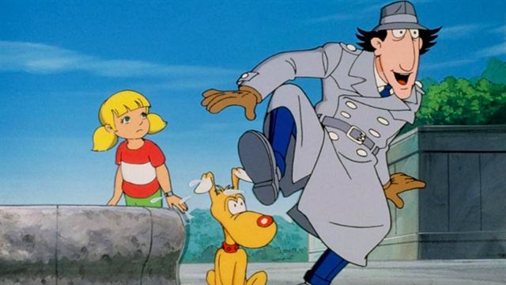
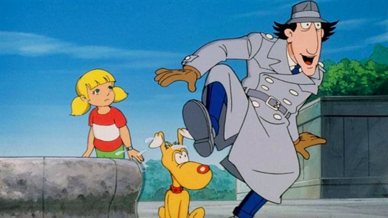

Haut de page
Haut de page
La Télévision
Avec l'essort de la technologie, la télévision est devenue de plus en plus accessible à toute la population. Alors, les divertissements ont commencé à se développer, en plus des chaînes d'informations qui étaient déjà présentes. Canal + voit le jour en 1984 qui sera alors la 4e chaîne télé française.
Cependant, c'est aussi durant cette période que nos parents ont grandi, période durant laquelle les émissions et séries télévisées ont explosées. C'est pour cette raison que l'on retrouve beaucoup d'émissions -de nos jours- sur le thème des années 1980 comme les enfants de la télé, le top 80, etc... . Quand la télé s'est développée, les animateurs de nos jours étaient les enfants ou adolescents qui suivaient l'évolution des chaînes, ce qui a donc participé a la perpétuité de cette culture.
La télévision devient alors un lieu de parole, de découvertes et de divertissement, avec des émissions de plus en plus larges, qui conviennent à différents publics. En effet, il y a différents types d'émissions télévisées :
Les Séries
- Magnum
- K 2000
- MacGyver
- Dynastie
Magnum est une série télévisée américaine en 162 épisodes de 50 minutes, créée par Glen A. Larson et Donald P. Bellisario et diffusée à partir du 13 décembre 1981 dans le cadre de l'émission Dimanche Martin sur Antenne 2.
Au volant de sa célèbre Ferrari, Thomas Magnum est détective privé à Hawaï. Sous les ordres de Higgins, ancien soldat britannique, Magnum résout ses affaires avec humour et décontraction, aidé par ses amis Rick et T.C. .
K 2000 est une série télévisée américaine en 90 épisodes de 45 minutes, créée par Glen A. Larson et diffusée à partir du 22 avril 1986 dans À fond la caisse sur La Cinq et les autres jusqu'au 11 avril 1992.
Les exploits d'un chevalier solitaire dans un monde dangereux. Le chevalier et sa monture. Un héros des temps modernes, dernier recours des innocents, des sans espoir, victimes d'un monde cruel et impitoyable. Michael Knight sillonne les routes américaines au volant de Kitt, sa voiture intelligente et indestructible, pour combattre les injustices et venir en aide aux innocents.
MacGyver est une série télévisée américaine en 139 épisodes de 45 minutes et deux téléfilms de 90 minutes, créée par Lee David Zlotoff et diffusée à partir du 4 janvier 1987 sur Antenne 2 en France.
Cette série a eu le droit à un reboot, mais celle-ci est loin d'être aussi bonne.
Cette série met en scène MacGyver, agent secret au département des service externes, puis employé de la Fondation Phoenix, une société privée à but non-lucratif. Dans les deux cas, le service était dirigé par son ami Peter Thornton.
Dynastie est une série télévisée américaine en 220 épisodes de 45 minutes, créée par Esther Shapiro et Richard Shapiro et diffusée en exclusivité européenne sur RTL Télévision dès 1982.
De nos jours, la série a donné naissance à un reboot en 2017
Richissime homme d'affaires, Blake Carrington est à la tête de la Denver Carrington, sa compagnie de pétrole, et de sa grande famille. Entre caviar, champagne, rivalités, chantages et vengeances, les Carrington ne font pas dans la demi-mesure !
Les Dessins Animés
- Les Simpsons
- Inspecteur Gadget
- Il était une fois la vie
- Capitaine Flam
 
